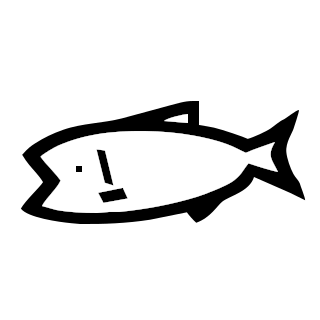
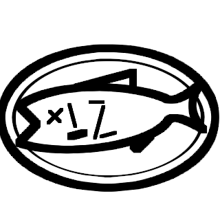
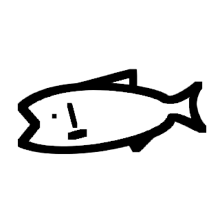

まず、Twelve って誰やねん
ということでプロフィールいってみよう！
名前
十二時(トゥエルブ)
生年月日(年齢)
2005年5月7日(16)
性別
男
趣味
プログラミング、ゲーム
特技
しいて言うならタイピング
タイピング速度(10分間)
最大で1,230文字くらい(ミス多いけど)
好きな言語
Java、C#、JavaScript、GML
犬と猫なら
猫です
はい。私はこんな人です。
ゲーム作ったりしてます。でも最近サボり気味なんです。なんでやろ。
ゲームとプログラミングと仮面ライダーが好きです。
結構な変人で、時々突拍子のないことを言ったりしたりします。
時々みる魚みたいなやつは何？

↑こいつです
こいつは適当に描いたマス…のような何かです。 元々 Discord の鯖アイコン用に描いていたんですが、 新しく自分のアイコンを作るときに
「あ、あいつを使うか」
ってなって、鯖アイコンのマスをちゃちゃっと改造して、
「ついでに絵文字にしよう」
って、絵文字を作って、そのついでに画像としてアップした結果かわいく感じてきて…
「よし、私のマスコットにしよう」
という考えから今に至ります。 Discord のアイコンと、Twitter のアイコン、あと GitHub のアイコンはこいつにしてます。
一応、こいつフリー素材ですw 使いたい人は自由に保存して使ってね。


すべての始まりとなった鯖のアイコン
前のマス。シャープじゃない